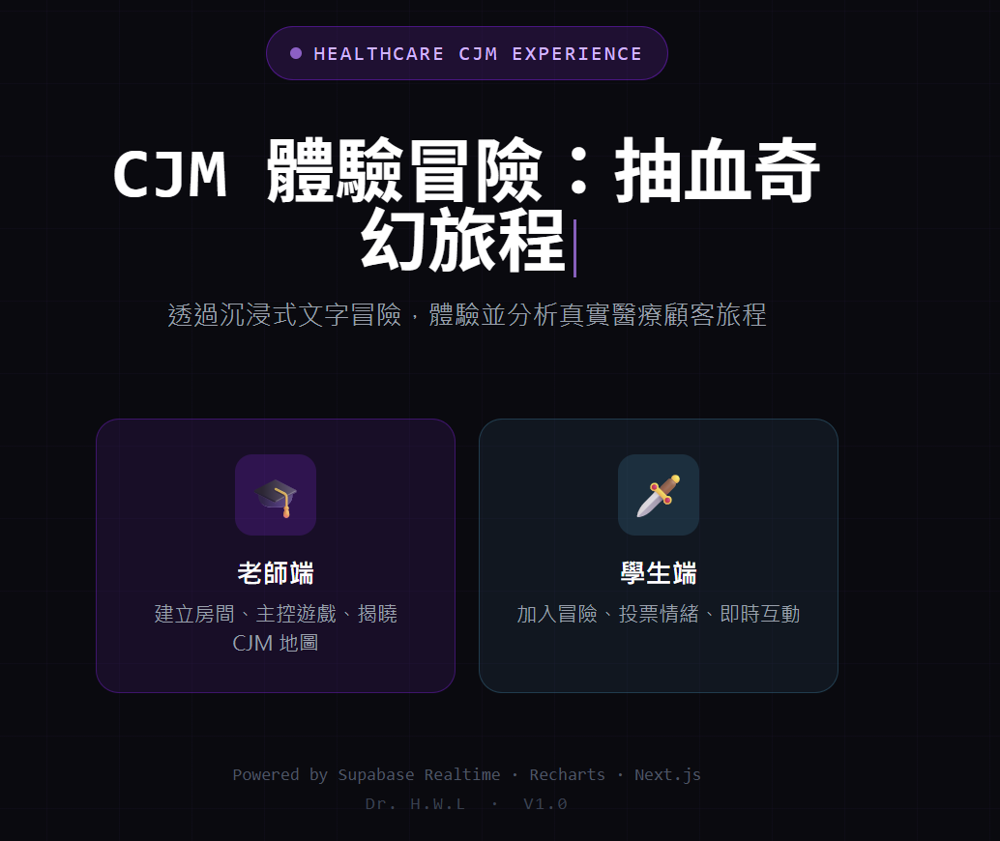
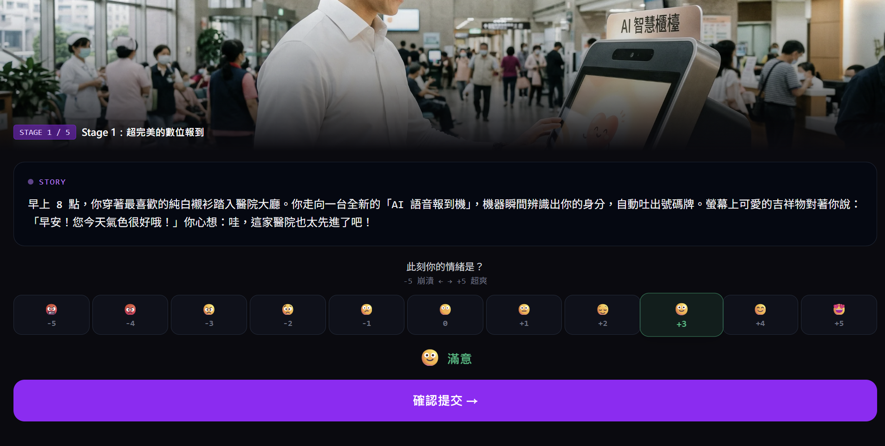
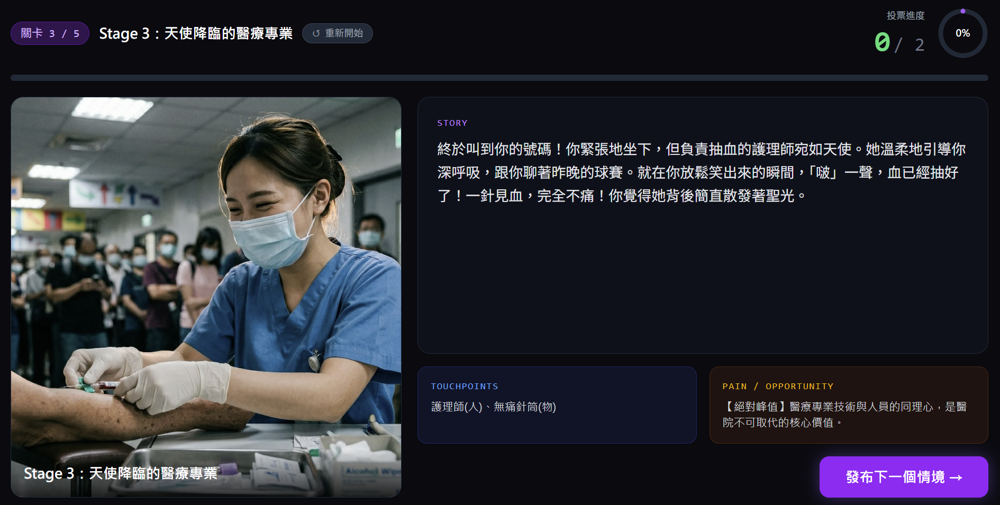
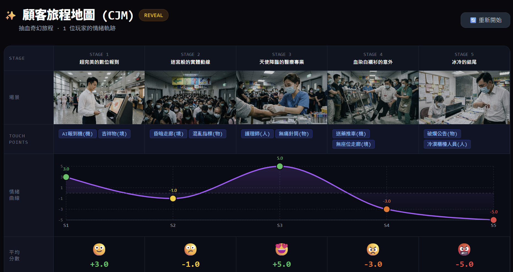

互動教學 · 服務設計
CJM 體驗冒險
2026.02 · 個人專案

FIG. 06 — 產品主畫面
關於這個作品
「CJM 體驗冒險：抽血奇幻旅程」是為服務設計課程開發的沉浸式教學工具。
學生扮演一位需要抽血的患者，在文字冒險遊戲中逐步體驗掛號、候診、採血等各個服務觸點，系統同步記錄每個環節的情緒起伏與痛點描述。遊戲結束後，這些輸入自然轉化為一張視覺化的顧客旅程地圖（Customer Journey Map）。
相比直接填 CJM 表格，學生在沉浸過程中更能感受服務缺口，課後討論品質大幅提升。
作品亮點
沉浸式文字冒險，學生以第一視角體驗服務流程
遊戲中自動記錄各觸點情緒，結束即生成 CJM
教師大螢幕即時看到全班進度與情緒分布
Next.js + Supabase 全端架構，支援班級規模部署
操作畫面


